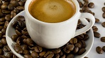

Кофе Доппио
250 мл
Стоимость:
160
руб.
Доппио (doppio) в переводе с итальянского означает «двойной». Как бы ни был хорош эспрессо, но многим кофеманам не хватает двух глотков напитка, чтобы как следует насладиться вкусом. Таких любителей всегда было немало, и со временем вместо «доппио эспрессо» начали говорить просто «доппио». Двойную порцию эспрессо стали считать видом кофе, которому положена отдельная строчка в меню.
Итальянцы народ творческий, они подарили миру не только гениальных художников, скульпторов и музыкантов, сказочную деревянную куклу Пиноккио, но и гениальный доппио.
После того, как кофемашины прочно обосновались в итальянских кофейнях, эспрессо из носиков агрегатов полился рекой. Обожаемый национальный напиток посетители заказывали сразу в двух экземплярах, чтобы не дожидаться второй чашки и не беспокоить бармена. Одной порции для большинства клиентов явно было недостаточно. Посуды тоже не хватало.

Выход нашелся быстро. Чтобы не создавать очереди и не загружать прорву кофейных пар, порции стали готовить в двойном объеме. Но этот напиток не был «бледнолицым» американо, который тоже дважды увеличен в объеме. Для приготовления чашечки американо использовалось столько грамм кофейных зерен, сколько их нужно для одной дозы эспрессо. Вдвое увеличивался объем воды, которую доливали в готовый эспрессо. Напиток частично терял характерный кофейный аромат, был менее крепким и насыщенным. Но американцам нравится именно такой «недоэспрессо», дело хозяйское.
С легкой итальянской руки coffee doppio отправился по миру. Как это обычно бывает, в каждой стране бариста внесли свои поправки с учетом вкусов населения. Рецепт напитка остался неизменным, отличие обычного эспрессо от эспрессо доппио заключалось только в объеме.
Доппио подают сразу же после приготовления в толстостенных чашках, а пьют как можно более горячим. Вместе с кофе гостю предлагают стакан негазированной воды комнатной температуры, ложечку, сахарницу или стикер сахара.
Прежде чем пить кофе, нужно сделать глоток воды, чтобы очистить рецепторы. По глотку воды можно делать после каждого глотка кофе, но последний глоток доппио запивать водой нельзя: это оскорбление для бариста. Последний глоток кофе запивают водой только в том случае, если вкус напитка не понравился и хочется поскорее от него избавиться. Доппио закусывают шоколадом, фруктами, твёрдым сыром. Напитком не рекомендуется злоупотреблять, так как в нём очень много кофеина.
Обратно в меню
Стоимость:
160
руб.